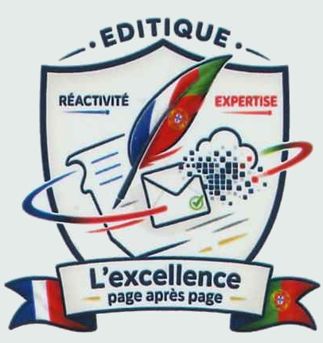

Portfolio
Raffalli--Eymeric Mathys
Profil
Note de synthèse ▼
Note de synthèse 1er année
Note de synthèse 2eme année
Veille Technologique
Projets
Projets

suivi des flux CFT sur costream
application de suivi des flux affichant les données que demande l'utilisateur. Python, API, json fait en 1er année de BTS SIO option SLAM
Projet 1 : Création d'un site web de e-commerce